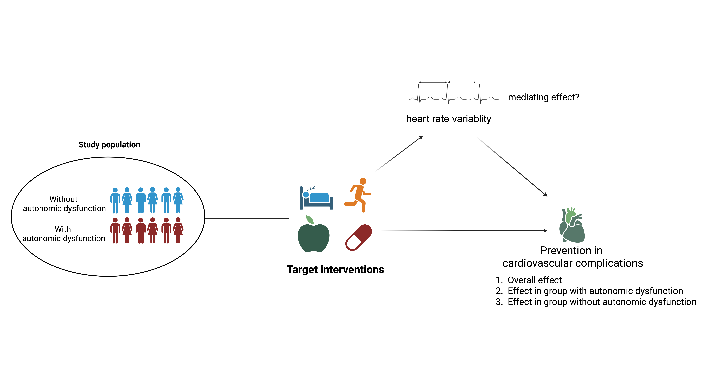

9 Perspective
We have investigated cardiovascular autonomic function ipact on cardiovascular complications across different stages of glucose metabolism. Based on our findings and conlcusions, we propose further perspectives to define its role in research and healthcare from three aspects: (1) continuous non-invasive health monitoring, (2) risk stratification, and (3) identification as a causal and modifiable marker.
9.1 Continuous monitoring of cardiovascular health
Understanding when and how physiological signals reflect elevated CVD risk is essential for developing early and effective prevention strategies. Incorporating HRV into digital health solutions could support personalized feedback mechanisms, enabling timely lifestyle or therapeutic interventions and contributing to more adaptive and preventive healthcare strategies. Wearable devices enable comprehensive data collection on behavioral (e.g., sleep and physical activity) and physiological (e.g., heart rate, ECG, temperature) parameters1. These devices offer a broader and more feasible approach to long-term heart rate monitoring. Despite growing interest in wearable-based monitoring, the integration of HRV into routine cardiometabolic risk assessment remains limited.
Two key aspects highlight the potential applications of monitoring: (1) identification of risk and (2) assessment of response to intervention.
Identification of risk
Lower long-term HRV is a risk factor for CVD, associated with arterial stiffness and clinical endpoints. Our findings indicate that specific HRV and heart rate patterns under free-living conditions may enhance early risk detection, independent of concurrent physical activity. For improved risk assessment, future predictive models should move beyond adjusting for physical activity as a confounder and instead integrate multiple physiological signals, such as HRV responses to sleep and activity patterns, to better capture dynamic health states. Machine learning offers powerful tools to analyze complex raw time-series data, including interbeat intervals and accelerometer signals, potentially improving risk prediction beyond traditional HRV summary metrics. However, the limited interpretability of these models remains a key barrier to clinical adoption.
Assessment of response to intervention
HRV represents a potential target for intervention, as low HRV may reflect adverse lifestyle patterns. Behaviors such as disrupted sleep, physical inactivity, and irregular meal timing can influence circadian fluctuations in HRV (ref. sleep, activity)2. Pharmacological interventions also impact HRV: beta-blockers have been shown to increase HRV, while GLP-1 receptor agonists may reduce it [3]4.

Future research can leverage wearable devices to better understand how behavioral and pharmacological factors influence HRV. This approach may help identify effective lifestyle patterns or treatments that support cardiovascular health through HRV modulation.
However, standardization and transparency across wearable device brands remain a challenge for both research and clinical use. While smartwatches offer convenient heart rate monitoring, their accuracy varies due to reliance on photoplethysmography, which can be affected by motion and other external factors, especially during physical activity [5]6. Despite these limitations, ongoing improvements in sensor technology and algorithm calibration are likely to enhance the reliability of wearable-derived HRV and heart rate data.
9.2 Risk-stratification
The distinct roles of long-term HRV and CART in cardiovascular risk stratification remain to be fully established and warrant further investigation. From a wearable technology standpoint, it is still unclear whether HRV can serve as an early indicator of CVD risk when incorporated into a risk score alongside simple, non-invasive markers such as age, sex, and BMI. Additionally, its comparative value against established CVD risk scores that include blood-based biomarkers and blood pressure remains to be determined.
A key limitation of long-term HRV measurement is the lack of standardization, as data collected under free-living conditions may be influenced by daily behaviors, potentially affecting risk classification. This highlights the need for standardized protocols. In contrast, CART is a reliable, non-invasive method that typically takes around 10 minutes to perform. A standardized and validated diagnosis of CAN using CART may help identify individuals with T2D who are at elevated risk of complications. However, the extent to which CAN diagnosis predicts heart failure risk and applies to broader populations with T2D or prediabetes remains to be clarified.
Our findings suggest that long-term HRV and CAN may serve as useful markers for identifying individuals at elevated metabolic risk who could benefit from targeted preventive strategies. Future research should explore whether those classified as high-risk based on autonomic dysfunction or CAN would benefit from earlier cardiovascular screening or tailored interventions.
.png)
9.3 Effective causal modifiable marker
Our findings support a potential etiological link between long-term HRV and CVD risk, providing preliminary evidence for a causal relationship. However, the observed association does not confirm causality, and further research is needed to determine whether HRV directly influences CVD outcomes. While randomized controlled trials are the gold standard for establishing causality, isolating the direct effect of HRV is particularly challenging. Interventions that affect HRV often do so indirectly through changes in weight, inflammation, or insulin sensitivity. Similarly, pharmacological treatments may improve HRV as a secondary effect, such as through blood pressure reduction from antihypertensive medications. This makes it difficult to determine whether modifying HRV itself leads to improved cardiovascular outcomes.
To address these limitations, modern epidemiological methods such as Mendelian randomization and structured causal mediation analysis offer promising alternatives. These approaches can help infer causality from observational data and estimate indirect effects using trial data. Notably, no genome-wide association study has yet investigated the genetic determinants of long-term HRV. Establishing such associations is essential for understanding its genetic architecture and for using genetic variants as unconfounded proxies to assess HRV’s causal role in CVD.

Future cardiometabolic intervention trials, whether focused on lifestyle or pharmacological strategies, should, where feasible, include HRV measurements. This would enable structured mediation analyses and help determine whether modifying autonomic function leads to sustained improvements in cardiovascular outcomes. Such evidence could clarify whether interventions like antihypertensive medications or lifestyle changes in physical activity, diet, and sleep can causally and sustainably improve CVD risk through HRV modulation.